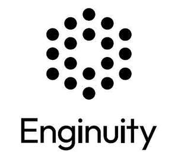

Trade Mark Journal No.2025/012 21 March 2025
UK00004166972 28 February 2025 (9,35,42)
Mark 1
Mark 2

- Class 9
- Computer software for managing, saving, searching, tracking, and retrieving information relating to patents, other intellectual property, innovation, and commercialisation of intellectual property; computer databases featuring information relating to patents, other intellectual property, innovation, and commercialisation of intellectual property; computer software for creating searchable databases of information and data relating to patents, other intellectual property, innovation, and commercialisation of intellectual property; computer software for the analysis of information and data relating to patents, other intellectual property, innovation, and commercialisation of intellectual property; computer software that provides access to databases of information and data relating to patents, other intellectual property, innovation, and commercialisation of intellectual property; downloadable electronic publications, including reports and summaries relating to patents, other intellectual property, innovation, and commercialisation of intellectual property; computer software for data mining, data query, data processing and data analysis.
- Class 35
- Compilation into computer databases of information and data relating to patents, other intellectual property, innovation, and commercialisation of intellectual property; collection and systematisation into computer databases of information and data relating to patents, other intellectual property, innovation, and commercialisation of intellectual property; management of databases for information and data relating to patents, other intellectual property, innovation, and commercialisation of intellectual property; providing information and data to business enterprises relating to patents, other intellectual property, innovation, and commercialisation of intellectual property; providing information and data to business enterprises relating to funding provided by government and other organizations in the fields of technology and innovation; providing information and data to business enterprises relating to commercial opportunities for exploitation of patents and other intellectual property rights; provision of online marketplaces for licensing of patents and other intellectual property rights.
- Class 42
- Software as a service [SaaS] featuring software for managing, saving, searching, tracking, and retrieving information relating to patents, other intellectual property, innovation, and commercialisation of intellectual property; software as a service [SaaS] featuring software for creating searchable databases of information and data relating to patents, other intellectual property, innovation, and commercialisation of intellectual property; software as a service [SaaS] featuring software for the analysis of information and data relating to patents, other intellectual property, innovation, and commercialisation of intellectual property; software as a service [SaaS] featuring software that provides access to databases of information and data relating to patents, other intellectual property, innovation, and commercialisation of intellectual property; software as a service [SaaS] featuring software for data mining, data query, data processing and data analysis; providing online non-downloadable software for managing, saving, searching, tracking, and retrieving information relating to patents, other intellectual property, innovation, and commercialisation of intellectual property; providing online non-downloadable software for creating searchable databases of information and data relating to patents, other intellectual property, innovation, and commercialisation of intellectual property; providing online non-downloadable software for the analysis of information and data relating to patents, other intellectual property, innovation, and commercialisation of intellectual property; providing online non-downloadable software that provides access to databases of information and data relating to patents, other intellectual property, innovation, and commercialisation of intellectual property; providing online non-downloadable software for data mining, data query, data processing and data analysis; design and development of software for managing, saving, searching, tracking, and retrieving information relating to patents, other intellectual property, innovation, and commercialisation of intellectual property; design and development of software for creating searchable databases of information and data relating to patents, other intellectual property, innovation, and commercialisation of intellectual property; design and development of software for the analysis of information and data relating to patents, other intellectual property, innovation, and commercialisation of intellectual property; design and development of software that provides access to databases of information and data relating to patents, other intellectual property, innovation, and commercialisation of intellectual property; design and development of software for data mining, data query, data processing and data analysis; design and development of computer databases which provide information and data relating to patents, other intellectual property, innovation, and commercialisation of intellectual property; creating, hosting and maintaining computer databases featuring information relating to patents, other intellectual property, innovation, and commercialisation of intellectual property; providing online computer databases featuring information relating to patents, other intellectual property, innovation, and commercialisation of intellectual property.
ENGINUITYAI LTD